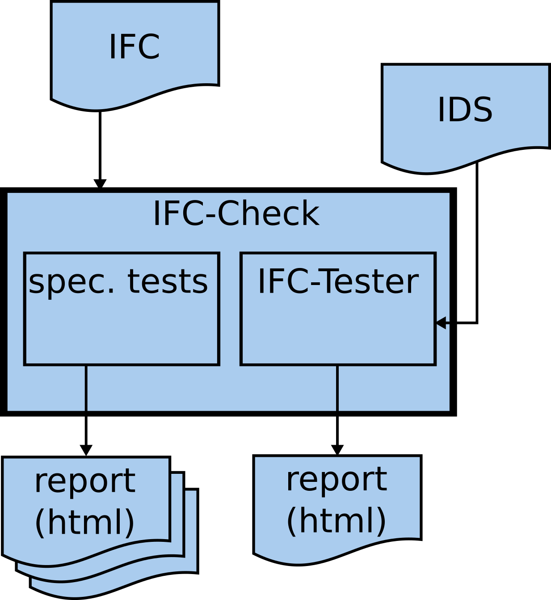
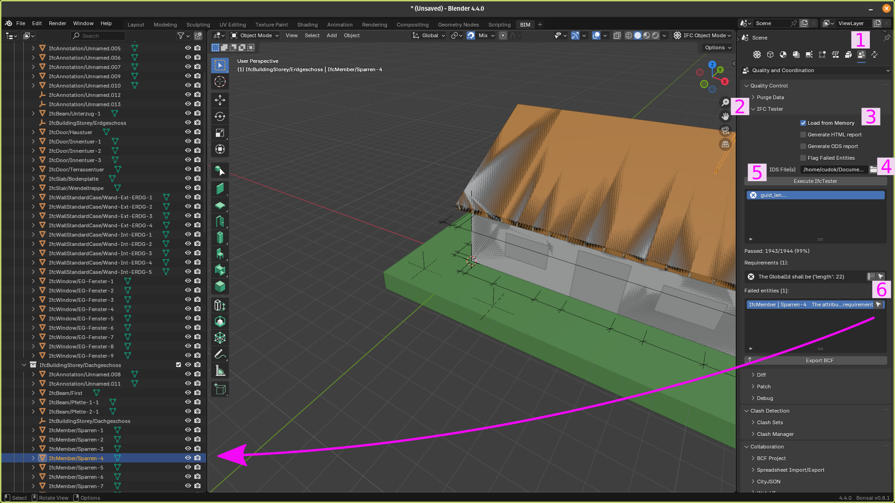

PluginIFCCheck
The IFC Check Plugin can be used for to run the basic task IFC Check. In general the IFC Check can be used to check the quality of the IFC files regarding the requirements of the use case (e.g. BPS).
The IFC Check runs checks based on IDS (Information Delivery Specification). For more information see section Generate IDS files. By this standard it is possible to create files (IDS files), which include the requirements regarding the format and content of the IFC files.
In back-end of the IFC Check the python package ifctester is used. This package is part of the ifcopenshell framework. The IDS standard (version 1.0) does not cover all required checks. For example, it is not possible to check the uniqueness of the GUID (Global Unique Identifier). Therefore the task IFC Check also includes functions, which cover these missing checks. The general structure of the task IFC Check is shown in Fig.: General structure of the IFC Check Task
{kind=link}

Fig.: General structure of the IFC Check Task
How to install?
Step by step
To install PluginIFCCheck: you need to do the following
(in the root directory of the repo, here is the pyproject.toml file)
pip install -e '.[PluginIFCCheck]'
The bim2sim core installation needs to be done before.
Test install
Examples
Please also take a look at
bim2sim/plugins/PluginIFCCheck/bim2sim_ifccheck/examples, which provides some
examples for the IFCCheck plugin. You can use these examples to test your
installation and learn from them. Additionally, they serve as good starting
points for your own projects.”
Structure of the plugin
The following figure shows the structure of the TEASER plugin. Here you see which tasks are used and how they are combined.
---
title: plugin IFCCheck
---
flowchart TB
subgraph taskLoadIFC["task LoadIFC"]
subgraph ""
tLoadIFC["bim2sim > tasks > common >
LoadIFC"]
extLoadIFC(" Load all IFC files from PROJECT. " )
end
stateLoadIFC[("state
(reads/touches)")]
tLoadIFC -- ifc_files --> stateLoadIFC
end
subgraph taskCheckIfc["task CheckIfc"]
subgraph ""
tCheckIfc["bim2sim > tasks > common >
CheckIfc"]
extCheckIfc(" Check ifc files for their quality regarding
simulation. " )
end
stateCheckIfc[("state
(reads/touches)")]
stateCheckIfc -- ifc_files --> tCheckIfc
direction RL
end
taskLoadIFC --> taskCheckIfc
This figure is generated by the script template_mermaid.py (see Visualization of bim2sim plugin structure).
How to create a project?
See the examples.
How to configure my project?
See the examples.
How to run the project?
Run the project scripts, like in the examples.
How to run the simulation?
With this plugin no simulation model will be generated.
What kind of results exist?
Have a look at the reports generate by the ifccheck task. When you ran the
examples in the terminal, you can find the working folder of the project run in
the log output of the terminal. The reports are stored in html formatted files.
These files are located in workingFolder/log. The following files will be generated:
created by ifcTester part:
ifc_ids_check.html
created by spec. functions:
ARCH_AC20-FZK-Haus_error_summary.html
ARCH_AC20-FZK-Haus_error_summary_inst.html
ARCH_AC20-FZK-Haus_error_summary_prop.html
ARCH_AC20-FZK-Haus_error_summary_guid.html
What programs/tools to use for further analysis or preparation?
Create IDS files
The IDS standard is developed by BuildingSMART (for more information regarding IDS see https://www.buildingsmart.org/what-is-information-delivery-specification-ids/ ).
The IDS file can created with an ordinary text editor, because the format of IDS files is just xml. The information are readable for humans (and machines). But the usage of specific tools is recommended. There are some open source tools like idsedit or ifctester WebApp.
Examples for IDS file are available here:
bim2sim specific:
‘repo-root/bim2sim/plugins/PluginIFCCheck/bim2sim_ifccheck/’
ifc_bps.ids
ifc_hvac.ids
general:
Correct failure found with ifc check / IDS check (with blender/bonsai)
An easiest way to solve an issue in the ifc file can be to use Bonsai an extension for Blender. The process is explained below:
{kind=link}

Fig.: How to check and correct errors with bonsai
Load ifc file
Go to “Scene Quality and Coordination” (1)
Enlarge IFC Tester (2)
Choose “Load from Memory” (3)
Choose the IDS file (4)
Execute ifcTester (5)
Select failing element via pressing location button (6)
Correct attribute value
More information about Blender / Bonsai. Some basic information about bonsai you can find in bim2sim YouTube channel.